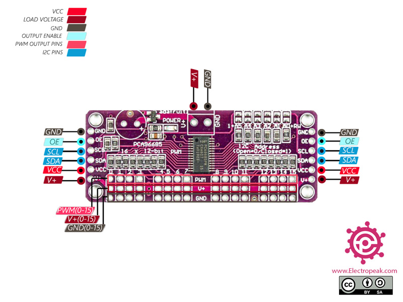

Pinout for Mega:
16 Channel adafruit module:
Adafruit Store

Sonic:
Taidacent Waterproof Ultra-Precision Ultrasonic Sensor
- 1, VCC, Power input lead
- 2, GND, Power ground lead
- 3, RX, Processing value and real-time value output selection lead
- 4, TX, UART output lead